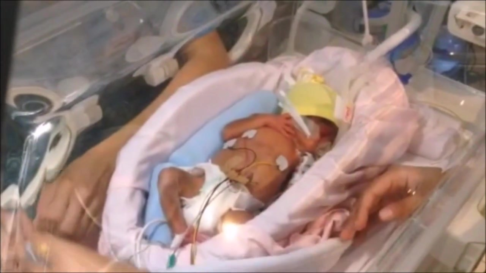
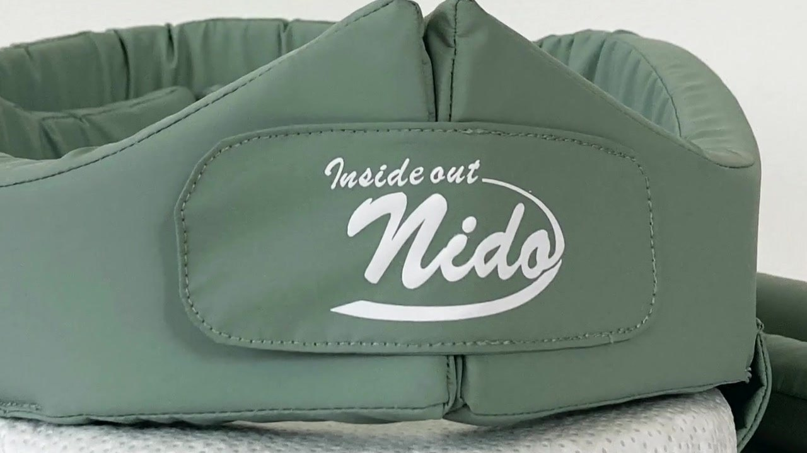
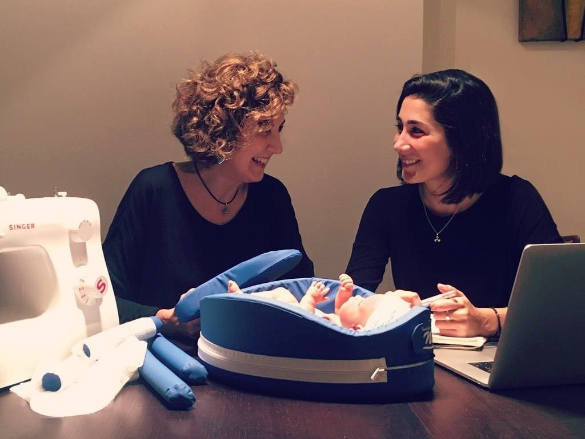

Para el bebé
- Contención y una postura adecuada
- Estimulación sensorial suave
- Mantiene su calor
Nido es un sistema de contención y estimulación sensorial para recién nacidos prematuros. Da al bebé la postura y el calor que necesita, acerca a su familia y ahorra tiempo al equipo de enfermería.


En una unidad neonatal, el cuidado es cosa de todos. Nido mejora el día a día de cada uno.
Preparar el nido en la incubadora pasa de 12 a 3 minutos. Es tiempo que el equipo recupera para la interacción con el paciente y las prácticas asistenciales.
Del primer prototipo a la incubadora: cómo se usa en el Hospital Sant Joan de Déu y quién lo ha hecho posible. 1 min 45 s.
Diseñamos junto al personal sanitario que usará nuestros productos, para llevarlos al mercado como producto sanitario con todas sus garantías.
“Un verdadero diseño debe emocionar, sorprender e ir contra el pensamiento común.”

Nido Innova nace en Barcelona para crear productos para los más pequeños, uniendo salud, diseño y negocio.
Cuéntanos cómo trabaja tu equipo y te enseñamos el sistema en una demostración.